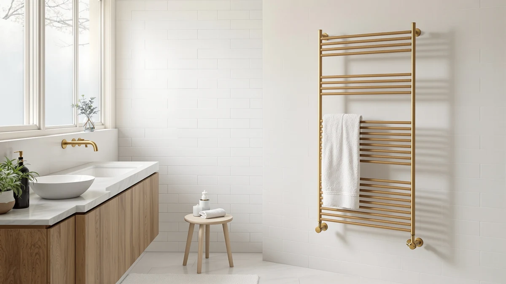

Best Towel Warmer vs Rack (2026) | Best Towel Warmers
Prices and picks verified as of September 2026. Independent, reader-supported reviews.


Things to Know Before You Buy
- Bucket warmers heat a towel to spa temperature in 10 to 15 minutes. Heated racks take 20 to 30 minutes and top out cooler.
- Racks dry damp towels between showers, which fights mildew. Buckets warm towels but do not ventilate them.
- Plug-in models on both sides run on a standard 120V outlet and draw 60 to 150 watts, about the cost of a light bulb.
- Wall-mounted racks need studs or rated anchors. Buckets and freestanding racks need no installation at all.
- Confirm a UL or ETL listing and a timer or auto shut-off on any model you shortlist.
You can settle the towel warmer vs rack question with one distinction. A towel warmer heats towels inside an enclosed bucket or cabinet, while a heated towel rack warms them on open bars mounted to the wall or standing on the floor. The bucket gets a towel hotter, faster. The rack keeps towels dry between showers and doubles as storage.
The price gap is smaller than you might expect. A capable wall-mounted rack like the LAMATILOVE starts at $59.99 on Amazon (as of July 2026), while bucket warmers such as the SereneLife wifi models run $93 to $100. Smart rotating warmers like the ENZE reach $159.99. Electricity stays cheap on both sides, roughly $2 to $4 a month with two hours of daily use.
We recommend the bucket-style ENZE Smart Rotating Heated Towel if you want the hot, spa-wrap feel the moment you step out of the shower. Pick a rack if your towels hang damp all day and you want them dry and warm rather than souring on a hook. If you rent, plug-in models of either type install without a drill or an electrician.
What You Need to Know
The towel warmer vs rack comparison starts with how each one moves heat. A bucket-style warmer works like a small, gentle oven. An element in the base heats the enclosed air, the lid traps it, and the towel inside reaches 110 to 120 degrees Fahrenheit in 10 to 15 minutes. A heated rack works by contact and convection instead. Warm bars raise the towel to 100 to 115 degrees over 20 to 30 minutes, and the open design lets moisture escape as the fabric heats.
That structural difference drives everything else. The bucket delivers a hotter towel but holds one oversized or two standard towels per cycle, and a damp towel returned to a closed bucket stays damp. The rack holds two to four towels, dries them within a couple of hours, and keeps them off the hooks where mildew starts.
Running costs land close together. Plug-in warmers and racks alike draw 60 to 150 watts, so two hours of daily use costs $2 to $4 a month at average US electricity rates. A timer keeps you at the low end of that range. We break down the full cost math in our guide to whether towel warmers are worth it.
Types and Categories
The warmer side of the towel warmer vs rack split covers three formats. Standard buckets, like the SereneLife models at $93 to $100, hold one or two folded towels under a lid and heat them in 10 to 15 minutes. Cabinet warmers, the kind you see in spas and esthetician studios, hold stacks of rolled hand towels and sometimes add a UV lamp. Rotating smart warmers, a newer category the ENZE leads at $159.99, turn the towel around the element so the outer layers heat along with the core.
Racks split two ways. Wall-mounted models, like the $59.99 LAMATILOVE or the wifi-equipped Aquatrend, bolt to studs or anchors and keep the floor clear, which suits small bathrooms. Freestanding racks plug in anywhere and move with you, the safer bet for renters. We compare those two mounting styles head to head in our freestanding vs wall-mounted guide.
Controls draw the last line. Basic models offer a switch and nothing else. Mid-range units like the Evokor add a timer with auto shut-off. Smart models from KEG, Aquatrend, and SereneLife take app schedules over wifi. A timer pays for itself on day one; the app matters when your routine changes and you want the schedule to follow.
How to Choose
Start choosing between a towel warmer and a rack by naming your complaint. If you shiver stepping out of the shower and want a hot wrap, buy the bucket. If your towels hang damp until morning and smell sour by Thursday, buy the rack. Name the problem first and you avoid the most common regret we see in owner reviews: a bucket bought to fix a dampness problem it cannot touch.
Count your towels next. A bucket handles one oversized towel or two standard ones per cycle, which suits a single user or a couple with staggered showers. A rack warms two to four at once and resets itself as towels dry, the better match for a family bathroom where three people shower before 8 a.m.
Then measure your space and check your lease. A wall rack needs 24 to 36 inches of clear wall near an outlet, plus anchor holes a landlord may not permit. Buckets and freestanding racks claim about a square foot of floor and leave nothing behind when you move.
Set the budget last. $50 to $70 buys a solid plug-in wall rack. $90 to $160 buys a bucket with a timer or wifi. $130 to $180 covers smart racks and rotating warmers like the ENZE. Whatever the price, confirm a UL or ETL safety listing and an auto shut-off before checkout. Our towel warmer buying guide walks through wattage and capacity in more depth if you want the full checklist.
Common Mistakes to Avoid
The most expensive towel warmer vs rack mistake is the category swap: buying a bucket to solve damp towels, or a rack to get a spa-hot wrap. The bucket cannot ventilate and the rack cannot hit 120 degrees, so each one disappoints when you ask it to do the other's job.
Undersizing comes second. A four-bar rack sounds spacious until two bath sheets cover it with overlap, and overlapping fabric blocks the bar heat and traps moisture against the wall. Count the towels your household hangs on a normal weekday, then add one bar row of margin.
On the installation side, a wall rack mounted into bare drywall ends up on the tile within months, and it takes a heated 15-pound unit down with it. Hit studs or use rated anchors, and hire a licensed electrician for any hardwired model. Our installation guide covers the plug-in, wall-mount, and hardwired paths step by step.
Skip unlisted imports too. A $30 rack with no UL or ETL mark saves you $30 and gambles your bathroom wiring on components nobody vetted. The same goes for buckets without an auto shut-off, which can run unattended for a full workday if you forget the switch.
Care and Maintenance
Neither side of the towel warmer vs rack pair demands much upkeep, but each rewards one habit. For buckets, leave the lid open for an hour after each cycle. The interior stays humid after heating, and a sealed damp bucket grows the same mildew smell it was supposed to prevent. Wipe the interior with a dry cloth once a week and vacuum lint from the base vents once a month, since lint buildup forces the element to work harder and run longer.
For racks, dust the bars weekly with a dry microfiber cloth and clean stainless or chrome with mild soap and water. Skip abrasive pads and bleach-based cleaners. They scratch the finish and open the plating to rust in a humid room. Hang towels in a single layer so the bars heat fabric instead of trapped air pockets.
On both types, inspect the cord twice a year where it meets the unit and the plug, since bathroom humidity ages insulation faster than dry-room use. Replace a cracked cord, and never tape over one. Use the timer even when you are home. Shorter heat cycles extend element life, and an element that runs two hours a day instead of ten lasts years longer for the same warm towel.
Our Top Picks
These three models cover both sides of the warmer vs rack split. We picked them from our full towel warmer roundups after comparing specs, safety listings, and owner reports across the category.

Editor's Pick
ENZE Smart Rotating Heated Towel
The rotating drum warms an oversized towel or robe through to the core instead of leaving cold spots, and the app starts it from bed. Buy it for the hottest towel of the three.
$159.99
Check Price on Amazon
Best Value
Wall Mounted Towel Warmer Rack
A plug-in wall rack that warms and dries two towels at once for $59.99. It solves the damp-towel problem for well under half the price of a bucket warmer.
$59.99
Check Price on Amazon
Premium Choice
SereneLife WIFI Luxury Rectangle Towel
A wifi bucket that heats a full-size towel in about 15 minutes and runs on a schedule you set once, so a warm towel waits for you each morning without you touching a switch.
$93.39
Check Price on AmazonIs a heated towel rack better than a bucket warmer for drying towels?
Yes.
Do bucket towel warmers cost more to run than heated racks?
No.
Frequently Asked Questions
Is a heated towel rack better than a bucket warmer for drying towels?
Yes. A rack's open bars let moisture escape, so a damp towel dries in one to two hours while it warms. A bucket traps humid air under its lid, so it heats towels well but leaves a returned damp towel damp.
Do bucket towel warmers cost more to run than heated racks?
No. Both types draw 60 to 150 watts in plug-in form. At average US electricity rates, two hours of daily use costs $2 to $4 a month on either side, and a timer keeps that figure at the low end.
Can I leave a heated towel rack on all day?
UL and ETL listed racks tolerate long run times, and some owners treat them as small radiators. We still recommend a timer or smart plug. It trims the electric bill, extends element life, and stops the unit from heating an empty bathroom for hours.
Do towel warmers and heated racks work in a rental?
Plug-in models on both sides do. Bucket warmers and freestanding racks sit on the floor and need no installation, and several wall racks ship with over-door or adhesive mounting options. Save the hardwired models for a home you own.
Do I need an electrician for a towel warmer or rack?
Not for plug-in models, which make up most of the market. Plug them into a GFCI-protected bathroom outlet and you are done. Hardwired racks tie into a wall circuit and do need a licensed electrician, a job that adds $150 to $400 to the project.
Verdict
The towel warmer vs rack choice comes down to the problem you want solved. Cold towels point you to a bucket warmer, and the ENZE Smart Rotating Heated Towel is the strongest bucket we compared. It heats an oversized towel or robe in about 15 minutes, the rotating drum removes the cold-core issue that plagues cheaper buckets, and you can start it from your phone before you get out of bed. Damp, musty towels point you to a rack, where the LAMATILOVE wall-mounted model handles two towels for $59.99 and earns its keep as everyday storage. A household that wants both can pair a $60 rack for daily drying with a bucket for weekend spa mornings and still spend less than a single hydronic installation. Whichever side you land on, insist on a UL or ETL listing and a timer or auto shut-off, and skip any import that offers neither, whatever the discount.